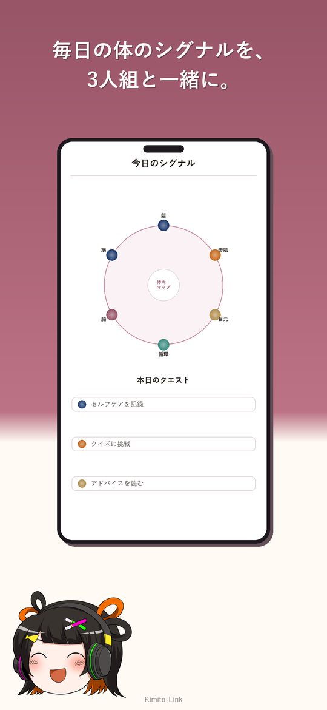
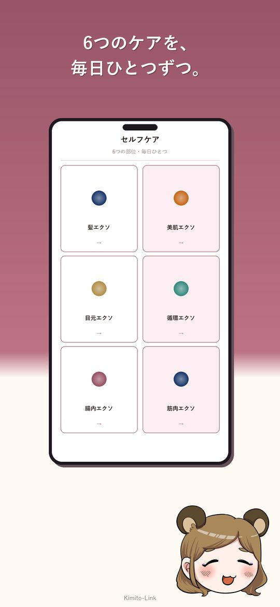
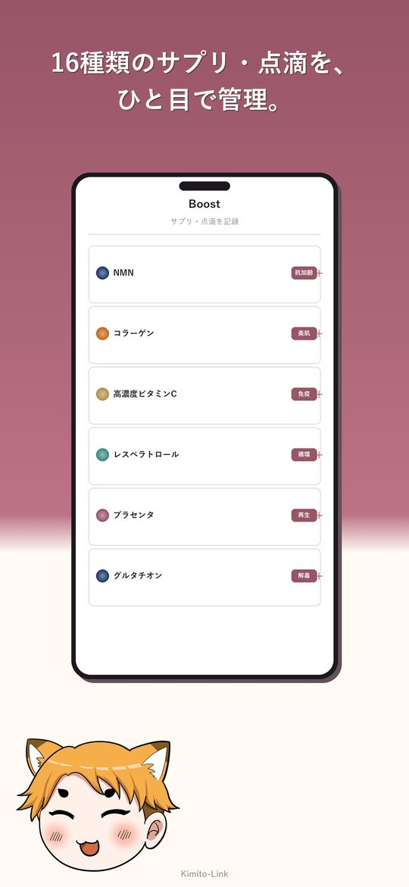
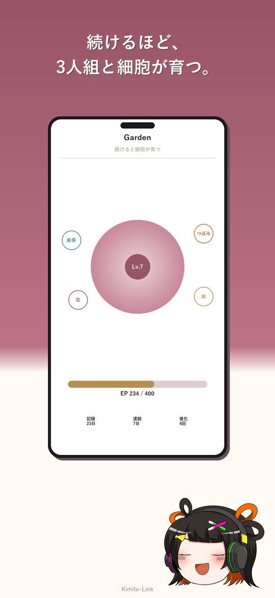
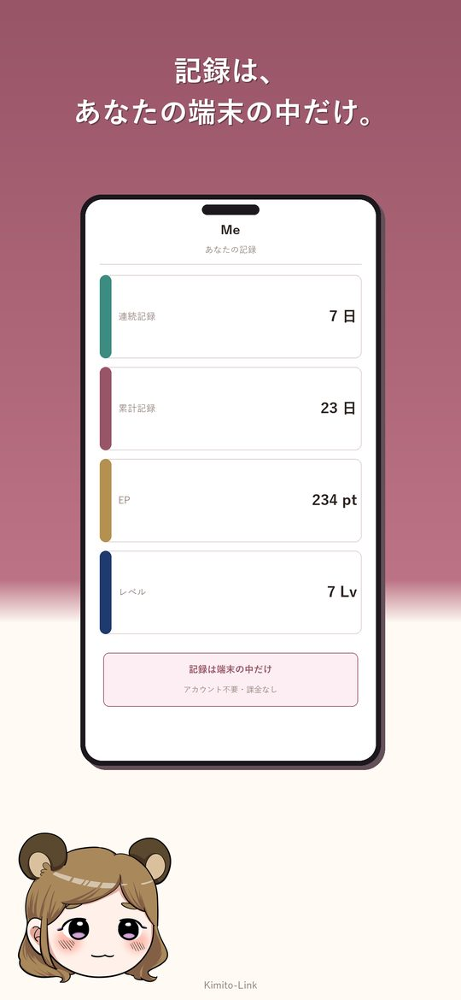

ゆっくりエクソソーム｜無料のセルフケア記録アプリ
きょうのセルフケアを、ゆっくり3人組と。
kimito.link のアカウントで入るだけ。記録は機種を変えても続きます。
 kimito.link アカウントで入ります
kimito.link アカウントで入ります
30秒・無料。X のパスワードは預かりません（認証は Clerk）。
押すと何が起きる？（Xの許可画面のこと）
- 1ボタンを押すと、この画面に kimito.link のログイン（Apple / Google / X）が開きます。
- 2X を選ぶと、X の画面に「kimito.link があなたのアカウントの権限へのアクセスを求めています」と出ます。アカウントが kimito.link 共通なので、この名前で出ます。「アプリにアクセスを許可」で戻ってきます。
- 3そのまま記録がはじまります。ゆっくりエクソソームが X に投稿することはありません。
同じ kimito.link アカウントで： すれ違ひ通信・ 動員チャレンジ・ ゆっくりエクソソーム
アプリの中身と、kimito.link アカウントを見るひとつのアカウントで、
kimito.link のアプリぜんぶ。
ゆっくりエクソソームは、kimito.link 共通アカウントで動きます。 いつもの X アカウント、または Apple でサインインするだけ。 パスワードをこちらで預かることはありません（認証の安全処理には Clerk を利用）。 一度ログインすれば、kimito.link ファミリーのどのアプリでも同じあなたです。
-
1
X または Apple でログイン
新しくパスワードを作る必要はありません。30秒で入れます。
-
2
記録があなたのアカウントに
セルフケアの記録は端末に残しつつ、引き継ぎ用に kimito.link へ複製。機種変更でも、アプリとブラウザの間でも続きます。
-
3
他のアプリも、そのまま
同じアカウントで kimito.link の別のアプリにも入れます。アプリが増えても、アカウントは増えません。
同じアカウントで使えるアプリ

できること
体内シグナルマップ
髪・美肌・目元・循環・腸内・筋肉の6部位。今日のケアが、どこに効いているかを眺められます。
肌と疲れのセルフチェック
10段階の具体的なガイド付き。数字を競うのではなく、その日の手ごたえを残していきます。
サプリ・点滴の記録
NMN・ビタミンCなど16種類を1タップで。前回からの経過日数も自動で出ます。
写真とメモ
変化の記録と、次の受診で聞きたいこと。どちらも端末の外には出ません。
続けるほど育つ
たまごから銀河まで。失う怖さではなく、明日の1枚を楽しみに続けられる形にしています。
からだを眺める
細胞シアター・入れ替わりリング・体内時計。記録とは別に、ただ眺めるための3画面。
画面を見る




3人が付き合ってくれます
りんく
食事・生活担当。今日のひとことをくれます。
こん太
ミニ知識担当。クイズで少しずつ詳しくなれます。
たぬ姉
おちついた解説担当。難しい話をやさしくほどきます。
アカウントと記録の扱い
- ログインは kimito.link 共通アカウント。X または Apple でサインイン。パスワードをこちらで預かることはありません。
- 課金なし。すべての機能を無料で使えます。
- 記録は端末に保存し、引き継ぎ用に kimito.link へ複製。機種変更しても、同じアカウントでログインすれば続きから。
- 写真・メモ・端末ごとの設定は複製しません。端末の中だけに残ります。
- アカウントの管理・削除は kimito.link で。アプリごとに別々の手続きはありません。
詳しくはプライバシーポリシーをご覧ください。
はじめる
kimito.link アカウントでログインするだけ。アプリでも、ブラウザでも、同じ記録が続きます。
 kimito.link アカウントで入ります
kimito.link アカウントで入ります
アカウントがまだない方も、X か Apple・Google があればその場で作れます。
スマホにはアプリもあります（同じアカウントでログイン）
このアプリは一般的な情報の紹介と、生活の記録のためのものです。診断や治療を目的としたものではありません。 食事や生活習慣を大きく変えるとき、持病や服薬があるとき、施術を検討するときは、必ず医療機関で医師にご相談ください。